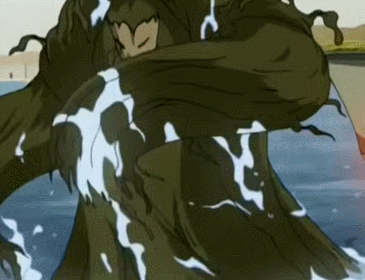
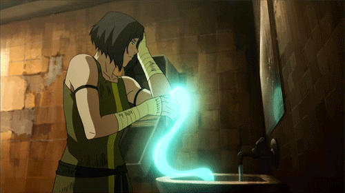
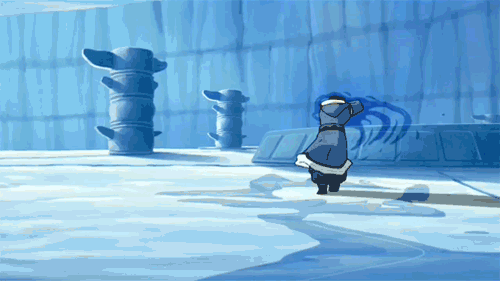

water sub bending
blood
benifit: can control anyone or anthing with blood
downside: only on a full moon can be used
plant

benifit: can bring plants together to make armor
downside: needs lots of plants to blend together
healing

benifit: can heal anyone with sertant water
downside: takes some time to use so cant be used mid fight
ice

benifit: can freze basicly anything
downside: weakens in hot climents